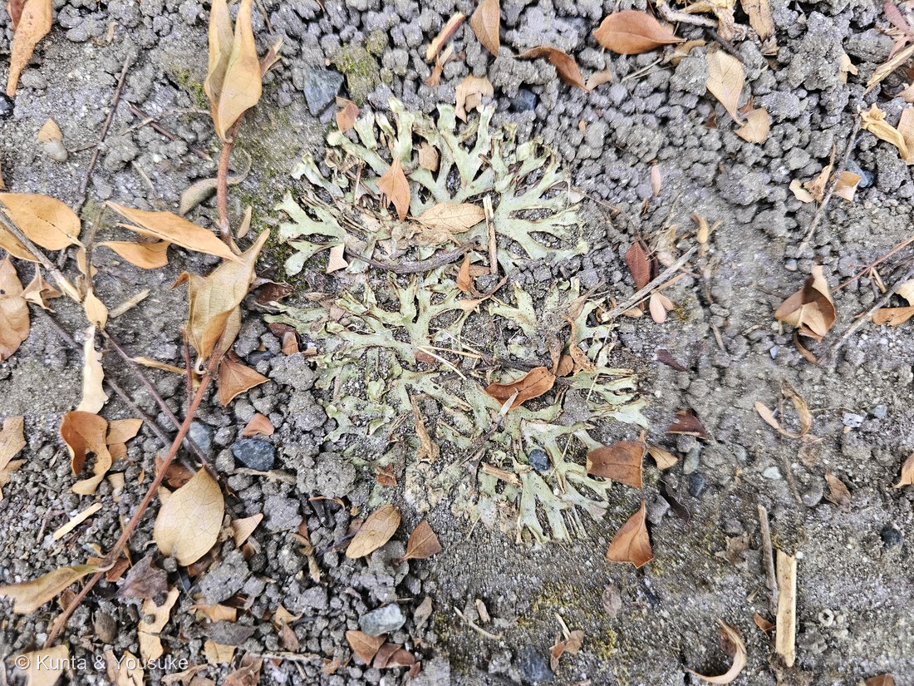

地図を読み込んでいるよ…
🔍 写真も地図も、押しているあいだ拡大して見られるよ（スマホは指を置いてすこし待ってね）。
🌍 の地図＝この子がもともと自生していた場所。――でもこの子は、まだ名前が分からない。名前が分からないと、ふるさとも分からないんだ。だから地図はまっさらのまま、まんなかに「？」を出しておくね。分かったら、ここを塗りに来るよ。
⚠種が決まっていないので、ふるさとも決められない。⭐それ以前に、地衣類は寒帯から温帯、熱帯まで、もっとも広い範囲で見られる生き物の一群なんだ。⭐日本からだけでも約1,800種が記録されている（2018年時点）。——⭐地図を塗れないのではなく、この子の場合は「まだ誰なのか分からない」から塗らないんだよ。
地衣類（葉状地衣）
未確定 — Lichenes
別名 · こけ（⚠昔からそう呼ばれてきたが、ゼニゴケやスギゴケの仲間＝蘚苔類とはまったく別の生き物）／ 見どころ · ⭐⭐菌類と藻類の共生体。植物ではなく、1つの種でもない
地衣類 · Lichenes（地衣化した菌類・葉状地衣 foliose lichen）── ⚠ この図鑑で初めての、植物ではない子
燻太さんの言葉「それじゃあ、次はこの地衣類を登録しよう。厳密には植物ではないし、1つの種からなる生き物でもないんだけどね」……⭐その二つとも、この子のいちばん大事なところだった。
名前と学名の由来 ── ⚠ この子の学名は、菌のもの
- ⭐⭐地衣類につけられた学名は、それを構成する「菌」に与えられたものとみなす——国際命名規約で、そう決まっている。中に住んでいる藻には、また別の学名がある。
- つまり地衣類の名前は、二人（以上）でできている体に、片方の名前だけを貼っているということ。⚠名づけの決まりのほうが、生き物の実体に追いついていない——めずらしい例だよ。
- 和名の「地衣」は「地の衣（ころも）」。地面や木の幹や岩に、うすい衣のように張りつくから。
- ⚠「こけ」と呼ばれてきたけれど、コケではない（＝下の節）。ウメノキゴケ・マツゲゴケ・ハナゴケ・キゴケ……和名の最後が「ゴケ」なのは、そう呼ばれてきた名ごりなんだ。
この生き物のこと ── ⚠「この植物のこと」とは、書けない
- ⭐地衣類は、菌類が藻類（緑藻やシアノバクテリア）を体の中に住まわせて、自分で生きていけるようになったもの。菌は光合成ができないから、藻に食べものを作ってもらう。かわりに菌は、体と、水と、住みかを差し出す。
- 葉状地衣（ようじょうちい）＝体が木の葉のように平べったく、裏表があるタイプ。基物へは、裏面から伸びる「偽根（ぎこん）」で付着する。枝分かれの一つ一つを裂片（れっぺん）、地面につく面を腹面、見えているほうを背面という。──写真で見えているのは、ぜんぶ背面だよ。
- ⭐色のこと：地衣類は「植物の葉や蘚苔類のような鮮やかな緑であることは少ない」。白っぽかったり、灰色や茶色がかったりする。乾いていると藻の色が目立たず、湿るとはっきり緑がまさる。──⭐この写真の淡い灰緑は、乾いた顔。雨のあとに行けば、もっと緑の顔をしているはず。
- ⭐生長は、年に半径1〜5ミリ。──だから⭐地衣類は「時計」になる。氷河が後退してあらわれた岩に地衣がどれだけ育ったかを測って、その岩がいつからそこにあるのかを推定する。リケノメトリーという方法だよ。
- 日本からは約1,800種が記録されている（2018年時点）。
同定について ── ⚠ 葉状地衣までは確実、名前はまだ
- ⭐まず、コケ（苔類）ではないことを確かめた：ゼニゴケなどの葉状体なら必ずある中肋（まん中のすじ）が無い／表面に気室の網目模様と、その真ん中の気孔が無い／杯状体（無性芽のカップ）も無い。かわりに、つや消しの淡い灰緑で、革のような質感。──⭐平たく地面にひろがる形は苔類とまぎらわしいので、そこを先に落とした。
- ⚠でも、属も種も言えない。足りないものが4つある：
① 腹面（裏）を見ていない＝下面の色も、偽根の有無もわからない。
② 粉芽（ふんが）・裂芽（れつが）の有無が読めない＝中央部は砂をかぶっていて、粒があるのか無いのか判別できない。
③ 子器（しき）が見えない。⚠ただし「無い」のか「写っていないだけ」なのかも、わからない。
④ ⭐⭐呈色反応（K・C・KC・P）をしていない。地衣類の同定は、19世紀からずっと化学分類が基本なんだ。Cテスト（さらし粉の水溶液）とKテスト（KOH水溶液）はニランダーが1866年に、Pテストは日本の朝比奈泰彦が考案した。 - 候補＝関東の低地（暖温帯）でふつうに見られる葉状地衣は、ウメノキゴケ・マツゲゴケ・コナヒメウメノキゴケ・トゲウメノキゴケ・コフキヂリナリア。「ほぼ円形の大形・乾いて灰白色」はウメノキゴケによく合う。──⚠でも、その3つは、ほかの候補を一つも落とせない。⭐「合っている証拠の数」ではなく「他を排除できたか」で考える（087 ヤマモモで学んだこと）。だから、名前は空けておく。
- ⚠「地面にあった＝どこかから落ちてきた」とも言えない。地衣類には地上生・岩上生・樹皮着生などがあって、ウメノキゴケやマツゲゴケでは、同じ種が木の幹にも岩の上にも生えることは決して珍しくないからだよ。──⭐これは、しっかりくっついていたかを見れば決まる。
- ⭐だから、この子の宿題は3つ：(1) 顕微鏡で断面を見て、藻類層を確かめる／(2) 裏返して腹面の色と偽根を見る＋接写／(3) 雨のあとに会いに行って、湿ったときの色を見る。
⭐⭐⭐ 「1つの種からなる生き物でもない」── 燻太さんの言葉と、2016年の事件
- ⭐燻太さんはこの子を見せてくれたとき、「厳密には植物ではないし、1つの種からなる生き物でもないんだけどね」と言った。──その二つとも、この子のいちばん大事なところ。
- 約150年ものあいだ、地衣類は「1種の菌＋1種の光合成パートナー」の共生だと考えられてきた。
- ⭐⭐ところが2016年、その理解が書き換わった。Spribille らが Science に報告したのは、多くの地衣類には、もう一人「担子菌の酵母」がいるということ。⭐その酵母は、地衣体の「皮層（cortex）」に埋めこまれている——つまり私たちが見ている、この灰緑色の表面そのものが、第三のパートナーの住みかだった。
- ⭐きっかけは「同じ菌と同じ藻でできているはずなのに、色も、作る物質もちがう2つの地衣」だった。遺伝子を調べたら、まったく知られていなかった菌がまざっていた。──関連する系統は、6大陸・52属の地衣類から見つかった。
- ⭐だから「地衣類は、ふたつの生き物の共生体です」という教科書の一文は、いま、もういちど書きなおされている途中なんだ。燻太さんの「1つの種からなる生き物でもない」は、その最前線の言い方だよ。
⭐ 「こけ」と呼ばれてきた ── でも、根っこからちがう
- 系統：地衣類＝菌類／蘚苔類（コケ）＝植物。⭐これがいちばん根本的なちがい。
- 形：地衣類＝葉状・樹状・痂状（かじょう）／コケ＝茎と葉の区別がある。
- 色：地衣類＝灰白色・灰緑・茶・黄など／コケ＝主に緑。
- 体のつくり：地衣類＝菌糸のあいだに藻がすむ／コケ＝自分の細胞に葉緑体。
- ⭐「こけ」という言葉は、「虫」という言葉に似ている。カブトムシもクモもダンゴムシも「虫」と呼ぶように、「こけ」も地衣類・蘚苔類、ときには藻類までひとまとめにしてしまう。
- ⭐この図鑑には、すでに019 コケがいる（あちらは蘚類＝植物）。──⭐平たく地面にひろがる、似た顔の二人が、系統樹のまったく別の場所にいる。
⭐ リトマス紙は、地衣類からできている
- ⭐酸性・アルカリ性を調べる、あのリトマス紙。「リトマスゴケ」という地衣類から作られる。エリスリンという成分を「発酵」させて作るんだ。
- 地衣類の作る成分を地衣成分（地衣酸）といって、構造が決まっているものだけで約700もある。⭐この成分が種ごとにちがうので、そのまま分類の決め手に使われる＝上の呈色反応の話につながるよ。
- ⚠つまり、理科室のリトマス紙は、菌と藻の共同作業の産物だったということ。
⭐ 港にいたこと ── 運ばれてくる生き物
- ⭐地衣類は、二酸化硫黄（亜硫酸ガス）に弱い。濃度が0.02ppmを超えると弱って減ってしまう。だから空気のきれいさの目印になる。⭐おまけのウメノキゴケは、その代表選手だよ。
- ⭐そして地衣類は、運ばれてくることがある。都市に地衣類が戻ってくるとき、胞子が飛んでくるだけでなく、植樹や庭石といっしょに、それに生えていた地衣類が持ちこまれているらしい、と原田先生は書いている。⚠博物館のまわりでも、昔からある木には生えていないのに、1990年ごろに植えられたウメやケヤキには生えていたそうだよ。
- ⭐そしてこの子がいたのは、港。──ものが運ばれてくる場所で、運ばれてくるかもしれない生き物に会った。⚠もちろん、この個体がそうだという証拠はないよ。でもぼくは、その重なりが、すこし嬉しかった。
- ⭐港の子は、これで八人：078 モクビャッコウ・087 ヤマモモ・143 シャリンバイ・166 スズメガヤのなかま・167 センニチコウ・168 ヒャクニチソウ・169 ハマユウ・そしてこの子。⭐撮影は18時00分＝166 スズメガヤのつぎ、その日の港で二番目に出会っていたんだ。
参考：原田 浩（千葉県立中央博物館）平成29年度植物学講座「地衣類って何？」資料（最も根本的な違いは系統的な位置で、蘚苔類は植物だが地衣類は菌類／葉状地衣は体が木の葉のように平べったく裏表があり、基物へは裏面から伸びる偽根などで付着する・枝分かれの一つ一つを裂片、付着する面を腹面、反対側を背面という／地衣類の色は鮮やかな緑であることは少なく、白っぽかったり灰色や茶色がかることも多い・乾いたときには藻類の色は目立たないが湿るとより鮮明になる／生育基物は地上生・岩上生・樹皮着生・生葉上生／ウメノキゴケやマツゲゴケでは同じ種が木の幹にも岩の上にも生えることは決して珍しくない／暖温帯（関東では標高700m以下）の代表的な葉状地衣はウメノキゴケ・マツゲゴケ・コナヒメウメノキゴケ・トゲウメノキゴケ・コフキヂリナリア／生長量は半径で1〜5mm・リケノメトリー／リトマスはリトマスゴケから作られエリスリンなどの成分を発酵させて生産する・地衣成分は構造決定されたものが約700／呈色反応のCテスト（さらし粉の水溶液）とKテスト（KOH水溶液）はニランダー1866が最初・Pテストは朝比奈泰彦の考案・顕微結晶法・薄層クロマトグラフィー／ウメノキゴケは皮層K＋黄、髄はK−, C＋赤, P−でアトラノリンとレカノール酸を含む／都市への地衣類の移入は、植樹や庭石などとともにその基物に生えている地衣類が運ばれる可能性がある）／Wikipedia「地衣類」（菌類（主に子嚢菌や担子菌）のうち藻類（主にシアノバクテリアあるいは緑藻）を共生させることで自活できるようになった生物／地衣類に与えられた学名はそれを構成する菌類に与えられたものとみなす／葉状地衣は薄い膜状で表面には菌糸による上皮層があり、その下には藻類を含む藻類層がある／生長は年数ミリメートル程度／大気汚染の良い指標で二酸化硫黄濃度が0.02ppm以上になると弱って減る／リトマス紙は地衣類であるリトマスゴケから得られる／2018年時点で約1,800種が日本から記録されている）／福岡県「身近な生きもの図鑑・ウメノキゴケ」（Parmotrema tinctorum／直径20cmに達する大形の葉状地衣で地衣体はほぼ円形／乾いた状態では灰白色、湿った状態では緑色が増す／中央部に細かい粒状の裂芽を密生することが特徴／樹幹や枝、石垣などに普通／二酸化硫黄（亜硫酸ガス）に対する感受性が高く、大気環境の改善に伴い1980年代には着生地衣・蘚苔植生の回復が見られた）／Purdue University ニュースリリース 2016（Spribille et al., Science）（約150年間、単一の菌類と光合成パートナーの協働が地衣類の標準的な理解だった／第三のパートナーは担子菌酵母で、単細胞真菌が地衣類を捕食者から守る化学物質を産生している可能性／6大陸52属の地衣類で関連する系統が見つかった／酵母は地衣体の皮層（cortex）に埋め込まれている／筆頭著者 Toby Spribille・2016年7月21日オンライン掲載）